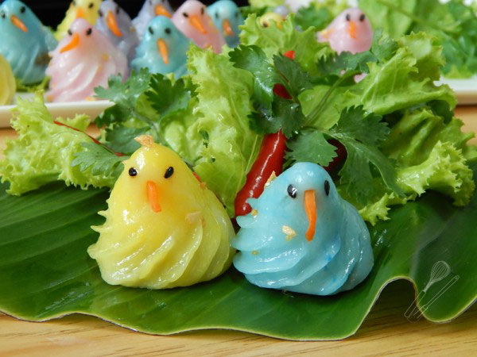

ขนมจีบนกไทย

ส่วนผสม ขนมจีบนกไทย
• รากผักชี 4-5 ราก
• กระเทียม 3 กลีบ
• พริกไทย (ตามชอบ)
• หอมใหญ่ (ขนาดกลาง) สับละเอียด 1 หัว
• เนื้อกุ้งสับละเอียด 400-500 กรัม
• น้ำตาลปี๊บ 2 ช้อนโต๊ะ
• น้ำตาลทราย 2 ช้อนโต๊ะ
• เกลือ 1 ช้อนชา
• ถั่วลิสงคั่วบดหยาบ
• แป้งข้าวเจ้า 1 ถ้วย
• แป้งมันสำปะหลัง 2 ช้อนโต๊ะ
• แป้งเท้ายายม่อม 2 ช้อนโต๊ะ
• หัวกะทิ 3 ช้อนโต๊ะ
• น้ำเปล่า 1 ถ้วย
• แป้งมันสำปะหลังสำหรับโรย
• สีผสมอาหารสีเหลือง, สีชมพู, สีฟ้า และสีม่วง
• แครอต
• งาดำ
• น้ำมันกระเทียมเจียว
วิธีทำไส้ขนมจีบ
1. โขลกรากผักชี กระเทียม และพริกไทยเข้าด้วยกัน เตรียมไว้
2. ตั้งกระทะแล้วใส่น้ำมันพืชลงไปเล็กน้อย พอร้อนใส่เครื่องที่โขลกไว้ลงไปผัดให้หอม
ใส่หอมใหญ่สับลงไปผัดจนนิ่ม ใส่เนื้อกุ้งสับลงไปผัดให้สุกเล็กน้อย ปรุงรสด้วยน้ำตาลปี๊บ
ตามด้วยน้ำตาลทราย และเกลือ
3. ผัดผสมให้เข้ากันจนเริ่มงวด ใส่ถั่วลิสงคั่วบดลงไป
ผัดให้เข้ากันจนแห้งจนสามารถปั้นเป็นก้อนได้ ตักใส่จาน พักทิ้งไว้จนเย็น
4. หั่นแครอตเป็นสามเหลี่ยมสำหรับทำเป็นปากนก และเตรียมงาดำสำหรับทำเป็นตาเอาไว้
5. พอส่วนผสมไส้เย็นแล้ว นำมาปั้นเป็นก้อนกลม ๆ ขนาดพอดีคำ เตรียมไว้
วิธีทำแป้งขนมจีบ
1. ผสมแป้งข้าวเจ้า แป้งมันสำปะหลัง และแป้งเท้ายายม่อมเข้าด้วยกันในอ่างผสม
ใส่หัวกะทิลงไปนวดผสมด้วยมือ เติมน้ำเปล่าลงไปนวดจนแป้งละลายและไม่เป็นเม็ด
2. เทกรองผ่านผ้าขาวบางแล้วเทลงกวนในกระทะทองใช้ไฟอ่อน กวนจนแป้งล่อนออกจากกระทะ
นำมานวดโดยโรยแป้งมันสำปะหลังลงไปเล็กน้อยเพื่อกันติดด้วย ใช้ตัวช่วยนวดแป้งป้องกันมือพอง
พอแป้งอุ่นแล้วก็ใช้มือนวดแป้งตามปกติ
3. แบ่งส่วนผสมแป้งเป็น 4 ส่วนแล้วนวดผสมกับสีผสมอาหารทั้ง 4 สี (ผสมสีกับแป้งนิดเดียวพอ
สีจะได้ออกมาแบบธรรมชาติ ห่อแป้งแต่ละสีด้วยพลาสติกถนอมอาหาร จากนั้นตัดแป้งแต่ละสีเป็นก้อน ๆ
ขนาดให้ใหญ่กว่าไส้นิดหนึ่ง
4. ปั้นแป้งเป็นก้อนกลม ๆ แล้วขึ้นรูปให้คล้ายผลชมพู่ กดก้นให้เป็นเบ้าลึก (พอให้ใส่ไส้ได้)
นำไส้ใส่ลงไปในหลุมแป้งแล้วห่อปิดแป้งให้มิด จากนั้นทำรูปร่างให้เป็นนก ใส่ปากทำจากแครอต
ติดตาจากงาดำ เตรียมไว้
5. ใช้แหนบบีบเพื่อทำจีบที่ตัวขนมให้มีลักษณะคล้ายปีกนกให้สวยงาม
ใส่ขนมจีบลงในชุดนึ่งที่รองใบตองไว้ พรมน้ำลงไป จากนั้นปิดฝานึ่งด้วยไฟแรง นาน 5 นาที
6. เมื่อครบ 5 นาทีให้พรมน้ำอีกครั้ง จากนั้นทาน้ำมันกระเทียมเจียวให้ทั่วขนม จัดใส่จาน
เสิร์ฟพร้อมผักกาดหอม ผักชี และพริกชี้ฟ้าแดง
ที่มา https://cooking.kapook.com/view191493.html